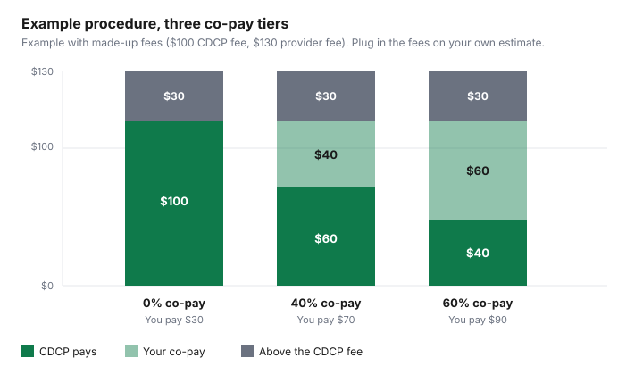

Healthcare · Canada
Canadian Dental Care Plan Extra Charges: Why You Might Still Get a Bill, and How to Ask Before Treatment
A bill after a Canadian Dental Care Plan visit is often a fee calculation, not a surprise fee invented at the desk. The plan pays a percentage of its own established fee. Your co-pay is the rest of that fee. Anything the clinic charges above the established fee, and anything the plan does not cover at all, is a separate amount you agree to. This page is how to separate those three numbers before treatment. Eligibility, the income test, and renewal sit on the CDCP guide. This is not dental advice. Confirm the estimate with the provider and with Sun Life before you say yes.
Key takeaways
- Under $70,000 of adjusted family net income, the co-pay on the CDCP fee is zero. From $70,000 to $79,999 it is 40 percent. From $80,000 to $89,999 it is 60 percent. The plan still has to be paying its share of the established fee, not the clinic's own fee.
- A provider may charge more than the CDCP fee. That difference is yours even when the co-pay is zero. Sun Life and canada.ca both say so. No procedure fee from the 2026 grids is copied here, because this guide does not quote a dollar amount for a code.
- The 2026 benefit grids apply to services rendered as of 1 April 2026. Preauthorization is generally valid for 12 months. Desensitization services need preauthorization from 1 April 2026. A co-pay can change on renewal, including from 1 July 2026, and the claim uses the co-pay on the day of care.
- You do not pay the CDCP portion and claim it back. The provider bills Sun Life. Ask for an estimate that splits the CDCP fee, the co-pay, and any amount above the fee.
- Veneers, bridges, implants, night guards, and teeth whitening are on the benefits guide's exclusion list. Limited orthodontic services are described as available to request at a date still to be determined.
How the CDCP pays: established fee grids, your co-pay tier, and the provider's own fee
Sun Life administers claims. The federal pages set the co-pay.
On the coverage page, the plan reimburses eligible services at CDCP established fees, and your share of those fees depends on adjusted family net income. Lower than $70,000: the plan covers 100 percent of the established fee and your co-pay is 0 percent, with possible charges above that fee. Between $70,000 and $79,999: the plan covers 60 percent and you cover 40 percent of the established fee. Between $80,000 and $89,999: the plan covers 40 percent and you cover 60 percent. Income of $90,000 or more is outside the plan. The eligibility guide walks through adjusted family net income. This page uses the tiers only to read a bill.
The established fee is not the provincial suggested fee guide, and it is not the number on the clinic's usual fee schedule. Sun Life's provider FAQ says the grids were built using the method of other federal dental programs, and that reimbursement is a percentage of eligible expenses up to the CDCP fees, which may differ from what the provider charges. The grids page says the 2026 CDCP dental benefit grids apply to all services rendered as of 1 April 2026. They are posted by province and by provider type, including general practitioners, specialists, denturists, dental hygienists, and oral and maxillofacial surgeons. A dollar from those grids is not printed in this article. Ask the clinic to read the current grid line for your code and your province.
Your co-pay percentage is on the welcome package that came with the member card. It can change. Sun Life's provider newsletter of 3 March 2026 says clients who renew and remain eligible may see a co-pay change starting 1 July 2026, and that a claim is paid on the coverage and co-pay in effect on the day the service is rendered. An estimate from April can be wrong in July if the tier moves from 40 percent to 60 percent, or the other way. Ask the clinic to recheck the tier on the day, by an electronic estimate or by calling the Sun Life CDCP Contact Centre at 1-888-888-8110.
Why a bill can remain: charges above the CDCP fee and services outside the plan
The coverage page lists three reasons you may pay the provider directly. Your adjusted family net income is between $70,000 and $89,999, so a co-pay applies.
The cost of the service is more than the CDCP will reimburse. Or you and the provider agree to services the plan does not cover. Those reasons stack. A 40 percent co-pay does not absorb a charge above the grid. The charge above the grid is not reduced by the plan's percentage.
Use one formula, and label every dollar that is not on a grid as illustrative. CDCP established fee is F. Your co-pay rate is R, which is 0, 0.40, or 0.60. The provider's fee is P. The plan pays (1 minus R) times F, and only if the service is covered and within the frequency rules. You pay R times F, plus (P minus F) if P is higher than F, plus the full price of any service that is not covered. If P is lower than F, you do not invent a negative extra charge. You pay the co-pay on F only up to what you were actually charged. The chart uses F of $100 and P of $130 so the arithmetic is visible. Neither number is a 2026 grid fee.
Some services are never in the plan. The Dental Benefits Guide, page details 31 March 2026, lists exclusions that include veneers, three-quarter crowns, teeth whitening and other cosmetic treatment, inlays and onlays in composite, precious metal, or ceramic, bridges and other fixed prosthodontics, night guards and other bruxism appliances, mouth guards, implants and implant-related procedures, and bone grafts. The same guide says complete and partial dentures supported by implants are exclusions. Limited orthodontic services can be requested at a date to be determined, with preauthorization, and only against stated clinical criteria. Routine braces are not a line you should assume is paid. If a service is outside the plan but not on the exclusion list, an exception request is possible and the guide says coverage of exceptions is expected to be extremely rare. The gap-coverage guide is the private-plan comparison if you are choosing coverage instead of the CDCP. Access to private dental coverage is an eligibility question, not a second payer you stack on top.
Preauthorization and frequency limits: what needs approval before treatment
Sun Life's provider FAQ says most covered services do not need prior approval, up to frequency limits. Some services, including major oral health services and services above those limits, do.
Services that require preauthorization have been eligible to request since 1 November 2024. The provider submits the code and the supporting documents through electronic data interchange or by mail. Post-determination, a review after the work is done, is described as rare and for emergent clinical situations, and approval is not guaranteed. The conversation about what you might owe still has to happen before treatment.
A preauthorization is generally valid for 12 months from approval. Approved preauthorizations for select preventive and periodontal services are valid for 24 months, if you are still eligible. Frequency limits use rolling periods. The guide's example: a recall exam limited to 12 months and done on 1 April 2025 is next eligible on 2 April 2026. The March 2026 newsletter says that beginning 1 April 2026 all desensitization services require preauthorization. Nitrous oxide and oral sedation are covered for four sessions in 12 months without preauthorization. Deeper sedation and general anesthesia need preauthorization, with a different rule for oral surgeons up to the limits in the grids. Partial dentures need preauthorization for the initial placement. Standard complete dentures do not, on the guide's frequency section, and they are covered once per arch in any 96 months. The denture guide stays on those rules.
An approved preauthorization is not a promise of a zero bill. It says the service can be considered under the plan rules. Your co-pay still applies. A fee above the grid still applies. If you are no longer eligible on the day of care, the newsletter says the claim will be denied even if a preauthorization is on file. If the request is denied and the service is not an exclusion, the guide says you can seek reconsideration through the provider, with additional clinical information. Exclusions are not reconsidered.
Reading a CDCP estimate line by line before you agree to treatment
Ask for the estimate before you book the appointment, not after the freezing. One line per code. If the clinic gives you a single total, you cannot see which dollars are the co-pay and which dollars are above the grid. The quote guide is the same discipline for any dental bill: match codes before you compare two offices.
| Column | What to write down | Illustrative 40% co-pay |
|---|---|---|
| Procedure code | The code the clinic will submit, plus the tooth or arch if the code needs one. | A placeholder code. Not a grid line. |
| CDCP established fee | F, from the current provincial grid for that provider type. Services from 1 Apr 2026 use the 2026 grids. | $100, labelled illustrative. |
| Provider fee | P, what this clinic charges for the same code. | $130, labelled illustrative. |
| CDCP pays | (1 minus your co-pay rate) times F, if the service is covered and within frequency. | 60 percent of $100 is $60. |
| Co-pay percent | 0, 40, or 60, from your tier on the day of care. | 40 percent of $100 is $40. |
| Extra charge | P minus F, when P is higher. Not reduced by the co-pay rate. | $30. |
| Your total | Co-pay on F, plus the extra charge, plus any uncovered line. | $70. At 0 percent co-pay the same extra charge is still $30. At 60 percent it is $90. |
| Ask this | Why it changes the bill |
|---|---|
| What is my co-pay percentage today, not at the last visit? | The claim uses the tier on the date of service. Renewal can move it, including from 1 July 2026. |
| Will you bill Sun Life directly, and will I pay only the balance? | Members do not submit claims or get reimbursed for the covered portion. |
| Is this code above the CDCP fee, and by how much? | That difference is yours at every co-pay tier, including zero. |
| Does this code need preauthorization, and is one already approved? | Doing the work first is post-determination, which the FAQ says is for emergent cases and is not guaranteed. |
| Is any line an exclusion, such as an implant, a bridge, or a night guard? | Exclusions are never paid and are not reconsidered. |
| Can the plan be done at the CDCP fee plus my co-pay only? | If the answer is no, you can phase the work or ask another participating provider. |

Your options: ask for a CDCP-fee-only plan, phase treatment, or find another participating provider
You can ask for a treatment plan that stays at the CDCP fee plus your co-pay. The official pages do not say the clinic must agree.
They do say you should discuss additional costs before care. If the clinic will not drop the amount above the grid, ask which codes can wait. A frequency limit is sometimes the reason to wait: a service inside its rolling period is not a second covered service. Phasing is a scheduling choice. It is not a clinical recommendation from this page.
A provider who has signed up can appear in the CDCP provider search and can confirm coverage in Sun Life Direct. A provider can also participate claim by claim. Either way, the provider bills Sun Life for the covered portion. You can look for another participating provider if the first office will not show you the grid line or will not separate the extra charge. Call 1-888-888-8110 if you need the contact centre to confirm eligibility before you travel to a second office. Bring the member card. The plan number and member ID are on it.
If you pay an amount the plan does not cover, that amount may be an eligible medical expense if it is on the Canada Revenue Agency list and it was not reimbursed. The medical expense credit guide is the threshold. It is not a reason to accept an uncovered service. Cosmetic treatment is on the CDCP exclusion list and purely cosmetic procedures are not eligible medical expenses on the CRA list either. Keep the estimate and the receipt. This is not tax advice.
Where do you ask questions or raise a concern about a CDCP bill?
Sort the question before you pick a phone number. If the dispute is "why is there a charge above the CDCP fee," that number is the clinic's fee.
Ask them to show F and P on the estimate. If the dispute is "the plan paid a different percentage than my card," ask the clinic to confirm the co-pay Sun Life has on the date of service. If the dispute is "the code was denied," ask whether it was frequency, missing preauthorization, an exclusion, or eligibility. The provider submits reconsideration when the guide allows it. You do not mail a claim to Sun Life yourself for the covered portion.
Sun Life's provider materials give the CDCP Contact Centre as 1-888-888-8110 for coverage checks, estimates, and provider enrolment questions. Paper claims, when they are used, go to the address on the Sun Life CDCP pages, and they need the member's signature in the assignment section or they are denied. That path is for the provider, not a household refund form. For enrolment and renewals, use the federal CDCP pages linked from the eligibility guide, not a clinic's reminder email. The Ontario Seniors Dental Care Program tells clients it does not send invoices. The same caution applies to any message that asks you to pay a "CDCP balance" through a link.
Sources
- Canada.ca, Canadian Dental Care Plan, What is covered: co-pay table at under $70,000, $70,000 to $79,999, and $80,000 to $89,999, and the three reasons a bill can remain. As of 27 Sep 2026.
- Sun Life, Oral health provider FAQ: co-pay tiers, charges above established fees, preauthorization from 1 November 2024, 12-month and 24-month validity, contact centre 1-888-888-8110. As of 27 Sep 2026.
- Sun Life, Dental benefit grids page: 2026 grids apply to services rendered as of 1 April 2026. No procedure dollar was copied.
- Sun Life, CDCP provider newsletter, 3 March 2026: desensitization preauthorization from 1 April 2026, and co-pay changes on renewal from 1 July 2026 using the rate on the date of service.
- Sun Life, How to use your dental plan: members do not submit claims or pay the covered portion upfront.
- Canadian Dental Care Plan Dental Benefits Guide, page details 31 March 2026: frequency example, denture and sedation rules, exclusion list, reconsideration, orthodontic services at a date to be determined. As of 27 Sep 2026.
Frequently asked questions
Why did I get a bill if I'm covered by the CDCP?
The plan pays a percentage of its own established fee, not whatever the clinic charges. From $70,000 to $79,999 of adjusted family net income you pay 40 percent of that fee, and from $80,000 to $89,999 you pay 60 percent. You can also be billed for any amount above the CDCP fee, and for a service the plan does not cover. A bill is those amounts added together. It is not, by itself, proof that enrolment failed.
Can my dentist charge more than the CDCP fee?
Yes. Sun Life's provider FAQ says you may still face additional charges if the provider charges more than the CDCP established fees, including when your co-pay is zero. The coverage page on canada.ca says the same thing. Ask whether the clinic will limit your bill to the co-pay on the CDCP fee. The pages cited here do not say a participating provider must match the grid.
Which services need preauthorization?
Most covered services do not, up to the frequency limits in the benefits guide. Major services, care above those limits, the first placement of a partial denture, and desensitization services as of 1 April 2026 do. Approval is generally valid for 12 months, and for 24 months for select preventive and periodontal services if you are still eligible. Not every request is approved. The guide, with page details dated 31 March 2026, is the list for a specific code.
How do I get an estimate before treatment?
Ask the provider for a written line that shows the procedure code, the CDCP established fee, your co-pay percentage, any amount above that fee, and whether preauthorization is required. The provider can submit an electronic estimate to Sun Life. Do not pay the CDCP-covered portion yourself and expect a refund. Sun Life's member instructions say the provider submits the claim and you must not pay that portion upfront.
Who do I contact about a CDCP billing question?
Start with the clinic, because a charge above the grid is their fee. Coverage, frequency, and preauthorization questions go through the provider to Sun Life's CDCP Contact Centre at 1-888-888-8110, or through an electronic estimate. A denied preauthorization can be reconsidered if the provider sends new clinical information, except for services the benefits guide lists as exclusions. This page is not a complaint line and it is not dental advice.
Researched and drafted with AI assistance and fact-checked against official Canadian sources. How we create content.